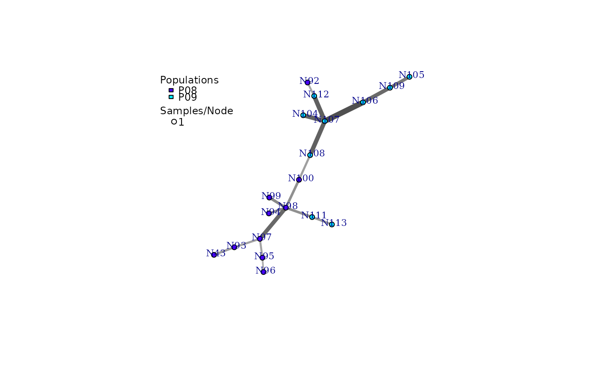

Create minimum spanning network of selected populations using Bruvo's distance.
Source:R/bruvo.r
bruvo.msn.RdCreate minimum spanning network of selected populations using Bruvo's distance.
Usage
bruvo.msn(
gid,
replen = 1,
add = TRUE,
loss = TRUE,
mlg.compute = "original",
palette = topo.colors,
sublist = "All",
exclude = NULL,
blacklist = NULL,
vertex.label = "MLG",
gscale = TRUE,
glim = c(0, 0.8),
gadj = 3,
gweight = 1,
wscale = TRUE,
showplot = TRUE,
include.ties = FALSE,
threshold = NULL,
clustering.algorithm = NULL,
...
)Arguments
- gid
- replen
a
vectorofintegersindicating the length of the nucleotide repeats for each microsatellite locus.- add
if
TRUE, genotypes with zero values will be treated under the genome addition model presented in Bruvo et al. 2004.- loss
if
TRUE, genotypes with zero values will be treated under the genome loss model presented in Bruvo et al. 2004.- mlg.compute
if the multilocus genotypes are set to "custom" (see
mll.customfor details) in your genclone object, this will specify which mlg level to calculate the nodes from. See details.- palette
a
vectororfunctiondefining the color palette to be used to color the populations on the graph. It defaults totopo.colors. See examples for details.- sublist
a
vectorof population names or indexes that the user wishes to keep. Default to "ALL".- exclude
a
vectorof population names or indexes that the user wishes to discard. Default toNULL.- blacklist
DEPRECATED, use exclude.
- vertex.label
a
vectorof characters to label each vertex. There are two defaults:"MLG"will label the nodes with the multilocus genotype from the original data set and"inds"will label the nodes with the representative individual names.- gscale
"grey scale". If this is
TRUE, this will scale the color of the edges proportional to the observed distance, with the lines becoming darker for more related nodes. Seegreycurvefor details.- glim
"grey limit". Two numbers between zero and one. They determine the upper and lower limits for the
grayfunction. Default is 0 (black) and 0.8 (20% black). Seegreycurvefor details.- gadj
"grey adjust". a positive
integergreater than zero that will serve as the exponent to the edge weight to scale the grey value to represent that weight. Seegreycurvefor details.- gweight
"grey weight". an
integer. If it's 1, the grey scale will be weighted to emphasize the differences between closely related nodes. If it is 2, the grey scale will be weighted to emphasize the differences between more distantly related nodes. Seegreycurvefor details.- wscale
"width scale". If this is
TRUE, the edge widths will be scaled proportional to the inverse of the observed distance , with the lines becoming thicker for more related nodes.- showplot
logical. If
TRUE, the graph will be plotted. IfFALSE, it will simply be returned.- include.ties
logical. If
TRUE, the graph will include all edges that were arbitrarily passed over in favor of another edge of equal weight. IfFALSE, which is the default, one edge will be arbitrarily selected when two or more edges are tied, resulting in a pure minimum spanning network.- threshold
numeric. By default, this is
NULL, which will have no effect. Any threshold value passed to this argument will be used inmlg.filterprior to creating the MSN. If you have a data set that contains contracted MLGs, this argument will override the threshold in the data set. See Details.- clustering.algorithm
string. By default, this is
NULL. Ifthreshold = NULL, this argument will have no effect. When supplied with either "farthest_neighbor", "average_neighbor", or "nearest_neighbor", it will be passed tomlg.filterprior to creating the MSN. If you have a data set that contains contracted MLGs, this argument will override the algorithm in the data set. See Details.- ...
any other arguments that could go into plot.igraph
Value
- graph
a minimum spanning network with nodes corresponding to MLGs within the data set. Colors of the nodes represent population membership. Width and color of the edges represent distance.
- populations
a vector of the population names corresponding to the vertex colors
- colors
a vector of the hexadecimal representations of the colors used in the vertex colors
Details
The minimum spanning network generated by this function is generated
via igraph's minimum.spanning.tree. The resultant
graph produced can be plotted using igraph functions, or the entire object
can be plotted using the function plot_poppr_msn, which will
give the user a scale bar and the option to layout your data.
node sizes
The area of the nodes are representative of the number of samples. Because igraph scales nodes by radius, the node sizes in the graph are represented as the square root of the number of samples.
mlg.compute
Each node on the graph represents a different multilocus genotype.
The edges on the graph represent genetic distances that connect the
multilocus genotypes. In genclone objects, it is possible to set the
multilocus genotypes to a custom definition. This creates a problem for
clone correction, however, as it is very possible to define custom lineages
that are not monophyletic. When clone correction is performed on these
definitions, information is lost from the graph. To circumvent this, The
clone correction will be done via the computed multilocus genotypes, either
"original" or "contracted". This is specified in the mlg.compute
argument, above.
contracted multilocus genotypes
If your incoming data set is of the class genclone,
and it contains contracted multilocus genotypes, this function will retain
that information for creating the minimum spanning network. You can use the
arguments threshold and clustering.algorithm to change the
threshold or clustering algorithm used in the network. For example, if you
have a data set that has a threshold of 0.1 and you wish to have a minimum
spanning network without a threshold, you can simply add
threshold = 0.0, and no clustering will happen.
The threshold and clustering.algorithm arguments can also be
used to filter un-contracted data sets.
Note
Please see the documentation for
bruvo.distfor details on the algorithm.The edges of these graphs may cross each other if the graph becomes too large.
The nodes in the graph represent multilocus genotypes. The colors of the nodes are representative of population membership. It is not uncommon to see different populations containing the same multilocus genotype.
References
Ruzica Bruvo, Nicolaas K. Michiels, Thomas G. D'Souza, and Hinrich Schulenburg. A simple method for the calculation of microsatellite genotype distances irrespective of ploidy level. Molecular Ecology, 13(7):2101-2106, 2004.
Examples
# Load the data set.
data(nancycats)
# View populations 8 and 9 with default colors.
bruvo.msn(nancycats, replen = rep(2, 9), sublist=8:9, vertex.label="inds",
vertex.label.cex=0.7, vertex.label.dist=0.4)

#> $graph
#> IGRAPH 1ef2b4b UNW- 19 18 --
#> + attr: name (v/c), size (v/n), shape (v/c), pie (v/x), pie.color
#> | (v/x), color (v/c), label (v/c), weight (e/n), color (e/c), width
#> | (e/n)
#> + edges from 1ef2b4b (vertex names):
#> [1] N43 --N93 N92 --N112 N94 --N98 N95 --N96 N95 --N97 N98 --N99
#> [7] N98 --N100 N98 --N97 N98 --N111 N100--N108 N93 --N97 N104--N107
#> [13] N105--N109 N106--N107 N106--N109 N107--N108 N107--N112 N111--N113
#>
#> $populations
#> [1] "P08" "P09"
#>
#> $colors
#> P08 P09
#> "#4C00FF" "#00E5FF"
#>
if (FALSE) { # \dontrun{
# View heat colors.
bruvo.msn(nancycats, replen=rep(2, 9), sublist=8:9, vertex.label="inds",
palette=heat.colors, vertex.label.cex=0.7, vertex.label.dist=0.4)
# View custom colors. Here, we use black and orange.
bruvo.msn(nancycats, replen=rep(2, 9), sublist=8:9, vertex.label="inds",
palette = colorRampPalette(c("orange", "black")), vertex.label.cex=0.7,
vertex.label.dist=0.4)
# View with darker shades of grey (setting the upper limit to 1/2 black 1/2 white).
bruvo.msn(nancycats, replen=rep(2, 9), sublist=8:9, vertex.label="inds",
palette = colorRampPalette(c("orange", "black")), vertex.label.cex=0.7,
vertex.label.dist=0.4, glim=c(0, 0.5))
# View with no grey scaling.
bruvo.msn(nancycats, replen=rep(2, 9), sublist=8:9, vertex.label="inds",
palette = colorRampPalette(c("orange", "black")), vertex.label.cex=0.7,
vertex.label.dist=0.4, gscale=FALSE)
# View with no line widths.
bruvo.msn(nancycats, replen=rep(2, 9), sublist=8:9, vertex.label="inds",
palette = colorRampPalette(c("orange", "black")), vertex.label.cex=0.7,
vertex.label.dist=0.4, wscale=FALSE)
# View with no scaling at all.
bruvo.msn(nancycats, replen=rep(2, 9), sublist=8:9, vertex.label="inds",
palette = colorRampPalette(c("orange", "black")), vertex.label.cex=0.7,
vertex.label.dist=0.4, gscale=FALSE)
# View the whole population, but without labels.
bruvo.msn(nancycats, replen=rep(2, 9), vertex.label=NA)
} # }